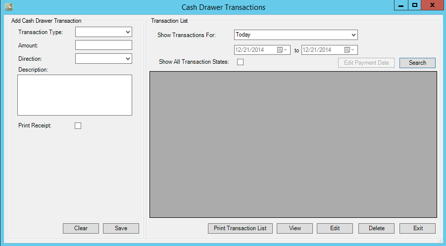
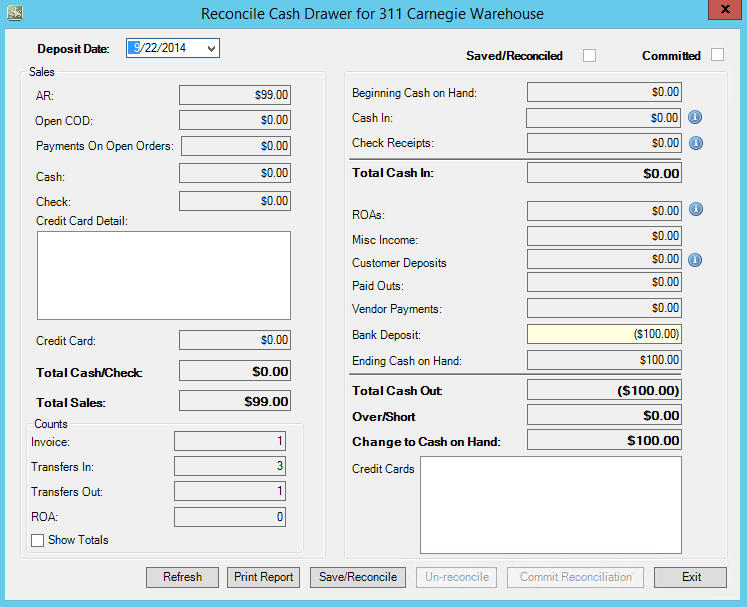
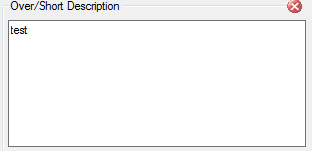

Cash Drawer
Provides ability to manager petty cash and reconciliation of cash drawer. Also gives an at-a-glance look at sales at any time of the day both by dollars and number of transactions.
Cash Drawer Maintenance
Select from applicaton toolbar, Select
- Enter Default Remaining Cash Value in Location Transaction Types tab
- Select Save
Petty Cash Transactions
Select from applicaton toolbar, Select

- Select Transaction type from Dropdown list
- Enter Amount of transaction
- Verify default Direction or change from dropdown if necessary
- Enter Transaction Description
- Verify/Select Print Receipt box
- Select Save (Select Clear to remove transaction data)
- Double copy of transaction receipt will display for printing
- Select Search to display on Transaction List
- Filterable by drop down selection ranges or customer date range
Cash Reconciliation
Select from applicaton toolbar, Select

- Verify Deposit date (Select from dropdown box to view calendar)
- Sales – Displays daily sales by payment method
- Credit Card Detail displays above credit card sales totals
- Total sales – Sum of all payment types and reflect total sales for selected deposit date
- Counts – Displays, by default, number of transactions by transaction type
 Select to view totals in dollars (Invoices will equal total sales)
Select to view totals in dollars (Invoices will equal total sales)
- Cash Drawer – Used for reconciliation of cash and bank deposit preparation
- Beginning Cash on Hand – Daily beginning balance
- Cash In – Equals amount in Cash Sales
- Check Receipts – Equals amount in Check Sales
- Total Cash/Check In – Equals beginning cash on hand, cash in and check receipts
- ROAs –Total ROA payments collected
- Misc. Income – Petty cash “In" transactions
- Customer Deposits – Amount taken in as customer deposits
- Paid Outs – Petty cash “Out” transactions
- Vendor Payments – Not Used
- BANK DEPOSIT – ONLY EDITABLE FIELD
- Enter total Amount of bank deposit (Includes customer deposits, ROAs, and petty cash in or out)
- Ending Cash on Hand – Displays configured daily beginning cash
- Over/Short – Difference between beginning and ending cash on hand
- NEW FEATURE : Comment dialog box – Enter text and exit box. Will save with daily cash drawer.

-
- Credit Card details
- Select Save/Reconcile when cash drawer reconciliation is complete
- Message window will alert you the reconciliation is complete and add check mark to indicate daily transactions are saved and reconciled
 Select to print report for location or corporate office records if desired
Select to print report for location or corporate office records if desired
- Suggestion: Print payout transactions and ROA receipts for the day and attach to cash drawer report
 Select commit after review of reconciliation
Select commit after review of reconciliation
- Commit confirmation window will appear to alert action is irreversible and prompts to continue
- No takes you back to reconciled cash drawer
- Yes prompts reconciliation was committed successfully
- Commit confirmation window will appear to alert action is irreversible and prompts to continue
 Note: Depending on company policy, Commit may be done by a different individual or department.
Note: Depending on company policy, Commit may be done by a different individual or department.